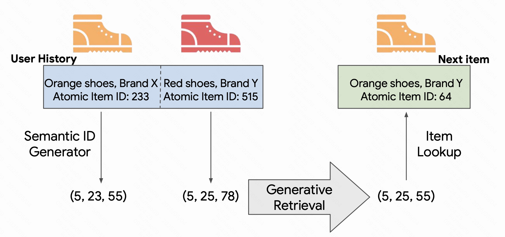
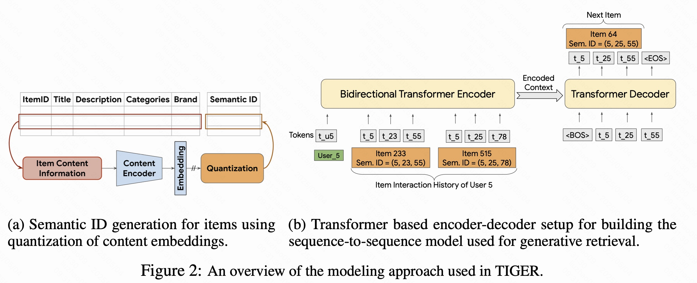
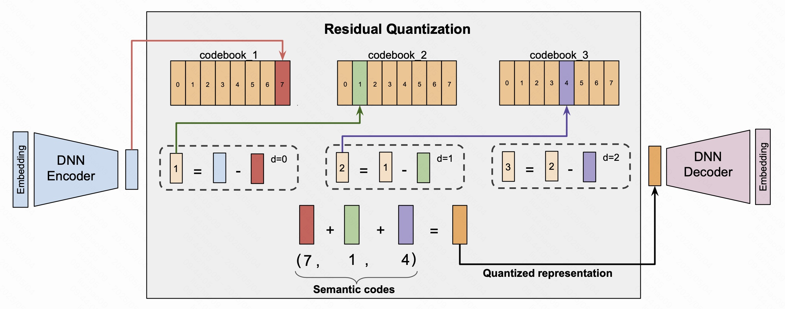
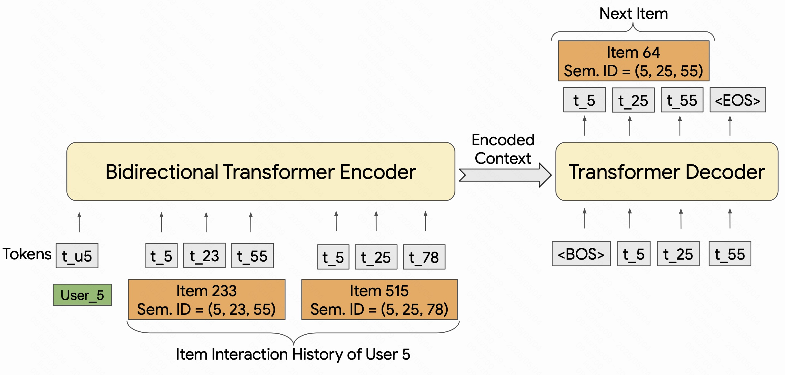

今天来学习这篇文章TIGER（Transformer Index for Generation Recmmenders）算是生成式推荐的开篇，可以为之后学习生成式推荐打好基础。可能现在来看这篇文章比较简单，但是它引领了一个生成式推荐的新方向，发表在NeurIPS 2023。刚好最近也在做生成式推荐的内容，就来回顾一下这篇文章。
论文地址：https://arxiv.org/pdf/2305.05065
1. 背景
1.1 传统的查询候选匹配
在现代推荐系统中，传统的推荐方法通常采用一种“查询候选匹配”（Query-Candidate Matching）的策略。这种策略的核心思想是将查询和候选物品（例如商品、视频、歌曲等）嵌入到一个统一的空间中。具体来说，推荐系统首先将用户的查询和物品候选集中的每个物品映射到一个向量空间，这些向量被称为“嵌入”（Embeddings）。然后，系统通过计算查询与候选物品之间的相似度，选择出最相关的物品进行推荐。
这个过程通常分为两个阶段：召回阶段和排序阶段。在召回阶段，系统会根据用户的查询向量从候选物品中选择一组可能相关的物品。这个阶段的目标是从巨大的候选物品库中快速筛选出一小部分候选物品，供后续的排序模型进一步处理。排序阶段则是对筛选出的候选物品进行更细致的排序，通常使用一个基于学习的排名模型（如基于梯度提升的树或神经网络模型）来选择最终的推荐物品。
然而，这种基于查询候选匹配的方法存在一些问题，主要体现在以下几个方面：
- 对于召回阶段的依赖：召回阶段的主要任务是从庞大的候选物品库中快速筛选出一部分可能相关的物品，这通常通过高效的近似最近邻搜索（Approximate Nearest Neighbor Search，ANN）技术实现。虽然这种方法能够快速缩小候选集的范围，但它仍然依赖于物品和查询的嵌入空间。如果召回阶段没有有效地选择出足够相关的物品，这会直接影响到排序阶段的效果。尤其是在物品的特征复杂或数据分布不均时，传统的召回方法容易忽略物品之间的深层语义关系，从而影响最终推荐的准确性。
- 对于排序阶段的局限性：排序阶段通常依赖于召回阶段选择的候选物品集。如果召回阶段选出的候选物品不够相关或不够多样，排序阶段的模型即使足够强大，也很难做出好的推荐。因此，排序阶段的效果在很大程度上取决于召回阶段的质量。如果召回集的物品过于单一或不符合用户的实际需求，那么推荐结果将无法满足用户的多样化需求。
- 对于反馈循环的影响：传统的查询候选匹配方法容易导致反馈循环问题。由于推荐系统通常基于用户的历史行为来预测用户可能感兴趣的物品，它可能会过度推荐某些热门物品或用户过去频繁交互的物品。这种偏向性会限制物品的多样性，并导致推荐结果的单一化，之前记录的文章：谷歌推出探索型推荐新范式：双LLM架构重塑用户兴趣挖掘就是试图解决这个问题，有兴趣可以查看。此外，冷启动问题也随之而来——当新的物品或用户加入时，由于缺乏足够的交互历史，推荐系统难以有效推荐这些冷门物品或新物品。
这些问题使得传统的查询候选匹配方法在现代推荐系统中面临着效率、准确性和多样性等方面的挑战。因此，研究者们开始探索更先进的方法，如生成性检索（Generative Retrieval），通过利用生成模型来克服传统方法的不足，从而提升推荐系统的性能，解决冷启动问题，并增加推荐的多样性和个性化。
1.2 TIGER：生成式推荐新范式
为了克服传统推荐方法在召回质量、泛化能力与冷启动问题上的局限，本文提出了一种全新的推荐系统框架——TIGER（Transformer Index for GEnerative Recommenders）。与以往通过查询和候选物品匹配进行推荐的方法不同，TIGER采用生成式检索的范式，使用端到端的生成模型来直接预测用户可能感兴趣物品的ID。其核心思想是将Transformer模型的参数作为一个“可学习的检索索引”，借助其强大的建模能力，在序列推荐任务中逐步生成目标物品的标识。为了实现这一目标，TIGER引入了“语义ID”（Semantic ID）的概念——这是由物品的内容信息（如标题、描述等）经过预训练文本编码器（如SentenceT5）提取语义嵌入后，通过量化得到的一组离散代码词。这些语义ID作为物品的唯一表示，输入到Transformer序列到序列模型中，训练模型预测用户下一个可能交互的物品。
TIGER所引入的语义ID机制带来了诸多优势：首先，基于内容生成的语义ID打破了传统模型依赖随机物品ID的限制，使得相似物品可以共享语义结构，从而支持知识迁移与泛化。其次，语义ID能够缓解反馈循环问题，减少推荐系统对热门物品的依赖，更好地支持新物品的推荐。此外，使用有限数量的代码词组合生成语义ID，也显著降低了物品表示的存储成本和参数规模，提升了系统的可扩展性。与传统的高维嵌入相比，这种语义分布式编码方式更加紧凑、高效。总的来说，TIGER不仅在多个推荐数据集上取得了优于现有最优模型的表现（如更高的Recall和NDCG），还展现出两个关键能力：其一是冷启动推荐能力，能够推荐此前从未出现过的物品；其二是推荐多样性控制能力，可通过调节生成参数实现推荐内容的丰富性。这一生成式推荐新范式，为构建更具泛化能力、可解释性和灵活性的推荐系统开辟了新方向。

图 1 展示了 TIGER 框架（Transformer Index for GEnerative Recommenders）的整体工作流程，说明了如何将序列推荐任务转化为一个生成式检索任务。首先，用户的历史行为序列被输入到系统中，例如用户曾经浏览过的两件商品：“橙色鞋子，品牌X”（物品ID 233）和“红色鞋子，品牌Y”（物品ID 515）。这些物品通过语义ID生成器进行处理，即先使用预训练的文本编码器提取其文本特征，然后将其嵌入向量进行量化，转化为一组离散的语义标识符（Semantic IDs），例如分别为 (5, 23, 55) 和 (5, 25, 78)。
接下来，这些语义ID被送入一个生成式检索模型（Generative Retrieval），模型基于用户的历史交互生成下一个最可能出现的物品的语义ID。例如模型预测出下一个可能的语义ID为 (5, 25, 55)。最后，系统通过一个反查过程（Item Lookup），在语义ID与物品ID的映射表中查找对应的物品，最终确定推荐结果为“橙色鞋子，品牌Y”（物品ID 64）。
通过这种方式，TIGER 将推荐问题从传统的“匹配候选物品”转变为“生成目标物品的语义表示”，不仅提升了推荐的灵活性和泛化能力，还支持了对新物品、冷启动物品以及多样化内容的更有效推荐。
2. 方法
2.1 框架
图 2 展示了 TIGER（Transformer Index for GEnerative Recommenders）推荐系统的建模流程，包括两个主要阶段：（a）语义ID的生成；（b）基于Transformer的生成式推荐模型训练。

2.1.1 语义ID生成过程
在该阶段，系统首先利用物品的内容信息（例如标题、描述、类别、品牌等），提取每个物品的语义特征。这些原始文本属性作为输入，被送入一个内容编码器（Content Encoder），如预训练语言模型 SentenceT5，用于生成该物品的高维嵌入向量。这些嵌入向量包含了物品的语义信息。
随后，通过量化模块（Quantization），将连续的嵌入向量离散化为一组语义代码（semantic codewords），通常是多个离散 token 组成的元组。例如，物品ID 233 的内容最终被编码成语义ID (5, 23, 55)，而物品ID 515 被编码为 (5, 25, 78)。这些语义ID作为统一的表示方式，替代传统系统中随机分配的原子物品ID。
2.1.2 基于Transformer的生成推荐
该部分展示了如何使用语义ID训练一个基于 Transformer 的生成式推荐模型。用户的历史行为序列（例如用户5交互过的物品233 和 515）会被转化为一组语义ID序列：[t_5, t_23, t_55], [t_5, t_25, t_78]，并作为输入传入一个双向Transformer编码器（Bidirectional Transformer Encoder），用于学习上下文信息。
在此基础上，系统使用一个Transformer解码器（Transformer Decoder），作为序列到序列的生成模型，根据编码器的上下文表示来生成用户下一个可能互动的物品的语义ID。例如，模型预测用户可能感兴趣的下一个物品的语义ID为 [t_5, t_25, t_55]，它对应于一个真实物品，如物品ID 64（橙色鞋子，品牌Y）。生成的语义ID再通过反查映射表即可获得最终推荐的物品。
2.2 语义ID生成
2.2.1 什么是语义ID？为什么要生成它？
在传统的推荐系统中，每个物品或用户通常都被分配一个“原子ID”，例如商品ID 123、用户ID 456 等。这种ID本身没有任何语义，仅仅是一个索引数字，它无法表达出物品之间的内容相似性或语义关联。例如，一双运动鞋和一件运动T恤，即使在使用场景上高度相关，它们的ID却毫无关联。这种表示方式虽然实现简单，但却在建模中引入了显著的限制：
- 原子ID不具备语义信息；
- 无法泛化到新物品、新用户（冷启动问题严重）；
- 在训练生成式模型时不利于学习和预测。
为了解决这些问题，TIGER提出用“语义ID（Semantic ID）”来替代原子ID。语义ID不是一个简单的编号，而是一个由多个“语义代码词”（semantic codewords）组成的离散元组，例如 (10, 21, 35)。每个代码词都来自一个预定义的“代码簿”（codebook），这类似于自然语言中的词表（vocabulary），但不是随机分配，而是基于物品内容语义经过编码器和量化器精确生成的。
这种设计不仅让语义相似的物品具有结构上的接近性（如共享部分代码词），还能为生成模型提供更清晰的输出目标。但更深层的动因，在于推荐系统与大语言模型（LLM）之间的根本区别：
✅ 与大语言模型的 tokenizer 的关键区别
在自然语言处理中，像 GPT 或 BERT 等语言模型使用的是固定的词汇表（vocabulary），也就是 tokenizer 所定义的那几万个 token。文本是由这些 token 组成的，比如英文单词、汉字、子词（subwords），这些都是相对稳定且数量有限的单位。因此，语言模型可以通过标准的生成策略逐个输出 token，完成句子的生成。
但推荐系统不同，面临两个巨大挑战：
- 候选空间极大：推荐系统中物品数可能达数千万甚至上亿，远远超出LLM的token数（通常是3万~5万个），显然无法将每个物品ID都作为一个token处理，否则模型输出空间过大，生成极其困难。
- 数据动态变化：推荐系统中的用户、商品、标签等实体是动态变化的，系统每天可能都在更新物品池或用户集，因此也不适合像语言模型那样依赖一个静态词汇表。
因此，在推荐领域，必须找到一种机制，既能让模型“生成”推荐目标，又能避免输出空间过大或词表不稳定的问题。语义ID就应运而生：
- 它是离散化的语义表示，不依赖具体物品ID，而是基于内容语义生成；
- 它的组成单位（codewords）来自固定大小的代码簿，大小可控、可重复利用；
- 它支持组合式表达：比如每个ID由3个token组成，每个token选自1000个候选，那总共可表达10亿个组合，足以覆盖大规模推荐系统中的物品空间。
通过语义ID的设计，TIGER框架成功地将推荐系统引入了一个生成式建模的新范式，使得系统能够像语言模型那样“输出”目标物品，但又规避了推荐领域中token空间过大、实体变化频繁等根本难题。可以说，语义ID是TIGER成功的核心支柱之一。
2.2.2 语义ID是如何生成的？
整个流程可以理解为两个步骤：
- 获取物品的语义嵌入（semantic embedding）：
- 对每个物品的内容信息（例如标题、描述、类别、品牌等）使用一个预训练的文本编码器进行编码（如 Sentence-T5 或 BERT），得到一个密集的嵌入向量
x，这个向量代表物品的语义。
- 对每个物品的内容信息（例如标题、描述、类别、品牌等）使用一个预训练的文本编码器进行编码（如 Sentence-T5 或 BERT），得到一个密集的嵌入向量
- 将嵌入向量量化为离散的语义ID：
- 嵌入向量是连续值的，但为了得到离散的语义ID，我们需要将其“量化”（Quantization），也就是找到一组最接近它的“离散点”来表示它。
2.2.3 引入RQ-VAE：多层次量化机制

为了将连续的语义嵌入向量（embedding）转化为离散化的语义ID，TIGER 引入了一种高效的编码方法：Residual-Quantized Variational AutoEncoder（RQ-VAE）。RQ-VAE 是一种递归式量化机制，它通过多级量化（multi-level quantization）来逐步逼近原始语义向量，每一级使用一个独立的“代码簿”（codebook）进行最近邻查找，并以此构建出物品的语义ID。本节将结合图 3 对整个过程进行详细说明。
图中展示了一个典型的 3 层 RQ-VAE 编码过程：
初始嵌入向量输入（蓝色）：首先，物品的内容信息经过 DNN Encoder（深度神经网络编码器）处理，生成一个连续的语义向量，记作 $r_0$（图中蓝色条）。这是我们要量化的目标向量。
第1层量化：最近邻查找 在第一层，我们拥有一个代码簿（codebook 1），包含若干预定义向量。RQ-VAE 会从中选出与 $r_0$ 最近的向量作为近似表示，设其为 $e_{c_0}$（图中红色条）。然后计算第一层残差误差：
- 第2层量化：进一步逼近残差 接下来将 $r_1$ 输入第二层代码簿（codebook 2），找到最近邻向量 $e_{c_1}$（绿色条），然后继续计算第二层残差：
第3层量化：再次逼近误差 同样地，$r_2$ 被输入到第三层代码簿（codebook 3），找到最近的向量 $e_{c_2}$（紫色条），构成最终的量化向量。
组合形成语义ID 最终，三个层次所选择的代码索引 $c_0, c_1, c_2$ 共同构成该物品的语义ID，例如 $(7, 1, 4)$。这些离散索引即为推荐系统后续生成目标时所要预测的“token”。
重构监督 为了训练编码器、解码器与代码簿，RQ-VAE使用重构损失和量化损失联合优化。将所有选中的向量相加得到近似向量 $\hat{z}$：
解码器尝试还原输入向量 $x$，损失函数为：
其中，$\text{sg}$ 表示 stop-gradient 操作，避免梯度直接更新 codebook 表达。
通过这种“从粗到细”的分层残差编码，RQ-VAE 能够更精确地逼近嵌入向量，同时控制生成目标的离散性和语义一致性。与传统一次性量化方法（如 VQ-VAE）相比，RQ-VAE 的多层递进机制不仅表达力更强，而且支持更大的表示空间，例如使用 $m=3$ 层、每层 $K=512$ 个向量即可组合出 $512^3 \approx 1.3 亿$ 个独特语义ID，足以覆盖大规模推荐系统的需求。
这种机制为 TIGER 的生成式推荐提供了良好的预测目标表示，使得物品的语义ID既紧凑又有语义结构，是连接内容信息与生成模型之间的桥梁。
2.2.4 其他方法对比
论文还探讨了除了RQ-VAE以外的其他方法：
- LSH（Locality Sensitive Hashing）：一种简单但粗糙的离散化方式，速度快但精度低；
- 基于k-means的层级聚类：可以生成多级ID，但会丢失代码之间的语义关系；
- VQ-VAE：是RQ-VAE的简化版，性能类似，但不具备多层次表达能力；
对比后发现，RQ-VAE的性能优于上述方法，尤其在推荐生成任务中更准确、表达能力更强。
2.2.5 语义碰撞问题
由于语义ID是离散的整数元组，不同物品可能在某些情况下生成相同的语义ID（称为“碰撞”）。为了解决这个问题，TIGER框架设计了如下机制：
- 附加标识位（附加token）：
- 如果两个物品生成了相同的语义ID，例如 (12, 24, 52)，系统会给其中一个物品添加额外的区分码，比如变为 (12, 24, 52, 0) 和 (12, 24, 52, 1)。
- 查找表（Lookup Table）：
- 系统维护一个映射表，将语义ID映射回具体的物品ID，避免模型误判。
- 只需训练后处理一次：
- 冲突检测和修复仅在训练好RQ-VAE之后执行一次，不影响训练效率。
2.3 基于Transformer的生成式推荐

TIGER 将推荐系统的核心任务转化为了一个典型的序列生成问题，即给定用户过去的行为序列，直接“生成”下一个可能感兴趣的物品的语义ID。与传统的“候选匹配+打分排序”不同，TIGER使用一个基于Transformer架构的序列到序列（sequence-to-sequence）模型，通过逐个生成语义ID中的token，完成推荐过程。
如图所示，系统首先为每位用户构建其历史交互序列，将其访问过的物品按照时间顺序排列，如：
每个物品都被编码成一个语义ID，形式为一个长度为 $m$ 的token元组，即：
于是整个用户行为序列就可以转换为一串语义token序列：
在模型架构上，TIGER使用一个双向Transformer编码器（Bidirectional Transformer Encoder）来编码用户的历史行为token序列，从而捕捉上下文信息；然后通过一个Transformer解码器（Transformer Decoder）生成下一个物品的语义ID，即 $item_{n+1}$ 对应的：
如图所示的例子中，用户曾经浏览过两个物品，其语义ID分别为 (5, 23, 55) 和 (5, 25, 78)，这些token序列经过Transformer编码器处理后，被传入解码器，解码器根据编码出的上下文，依次生成下一个物品的语义ID，例如 (5, 25, 55)，即可能对应一个新的物品（如“橙色鞋子，品牌Y”）。
整个生成过程就像语言模型生成句子那样，每一步都基于上下文生成下一个token，直到生成完一个完整的语义ID。其关键优势在于：
- 完全端到端，无需预定义候选集合；
- 生成的是语义ID，可泛化到新物品；
- 序列建模能力强，捕捉行为上下文；
- 支持控制生成多样性，适配不同推荐需求。
当然，由于语义ID是组合式离散编码，理论上存在模型生成出“训练语料中不存在”的语义ID的可能性。但正如作者在附录中所示，这种情况的概率极低，而且可以通过查表机制、最近邻匹配或增加token冗余等方式有效处理。
因此，TIGER 所提出的生成式推荐范式不仅简化了推荐流程，更重要的是，它打破了传统推荐对固定候选集和历史交互数据的依赖，使得推荐系统具备了更强的表达能力、泛化能力与灵活性。借助 Transformer 强大的建模能力，推荐系统也进入了“可预测、可理解、可控制”的新时代。
2.3.1 个人理解
在 TIGER 架构中，引入双向 Transformer 编码器（Encoder）并不是绝对必要的，但作者的考虑可能对于推荐任务尤其有效。用户的历史行为序列是已知的、完整的，因此可以使用双向编码器来充分建模物品之间的上下文关联，提升对用户兴趣的理解。而生成下一个物品语义ID的过程则由 Decoder-only 的 Transformer 解码器完成，它通过自回归地逐步输出 token 来构造完整的语义ID。在生成过程中，解码器会通过 cross-attention 机制访问编码器输出的上下文表示 $H$，从而融合用户历史行为的信息。相比完全使用 Decoder-only 架构，Encoder-Decoder 结构更适合推荐任务中“理解 + 生成”的组合需求，兼顾上下文建模能力与生成灵活性。
输入：当前已生成的语义token（比如
每一步：解码器读取自身生成的token，同时通过 cross-attention 访问编码器的输出 $H$；
输出：预测下一个token（如 55）。
3. 总结
本论文提出了一种全新的推荐系统框架——TIGER（Transformer Index for GEnerative Recommenders），旨在将推荐任务从传统的“匹配候选+排序”范式转化为一种**生成式检索（Generative Retrieval）**方法。与以往依赖原子ID和大规模候选集匹配的方式不同，TIGER 通过以下两大核心创新实现端到端推荐：
- 语义ID（Semantic ID）建模：使用预训练文本模型（如 Sentence-T5）提取物品的内容语义，并通过残差量化（RQ-VAE）将其编码为离散的token元组（如 (7, 1, 4)），既具有语义表达能力，又适合生成任务建模。
- 基于Transformer的序列生成模型：将用户的历史行为表示为语义ID序列，使用Encoder-Decoder结构的Transformer模型学习用户偏好，并生成下一个物品的语义ID。
该方法支持在无候选集索引的情况下直接“生成”推荐目标，并具备更强的泛化能力，特别适用于冷启动推荐和生成多样化结果。实验在多个 Amazon Review 数据集上验证了 TIGER 在 Recall@K 和 NDCG@K 等指标上相较 SOTA 方法具有显著提升。
不过这里的语义ID建模是静态的，并没有与user-item交互相关，也就是没有协作知识整合，后续的生成模型也有不少改进空间。但总的来说它是一篇比较简单但是开创性的工作。